Introdução
Os diagramas de caso de uso são representação gráficas daquilo que um ator pode fazer em um determinado contexto de um sistema. Os diagramas aqui apresentados tiveram como base os cenários levantados na dinâmica anterior. Além disso, durante a modelagem surgiram novos casos para atender as necessidades do sistema. Cada caso de uso possui uma especificação de caso de uso atrelada, que detalha melhor as ações do ator.
DCU 1
Enviar mensagem mensagem para outro usuário
especificação de caso de uso: ECU 10

DCU 2
Cadastro de usuário
especificação de caso de uso: ECU 1
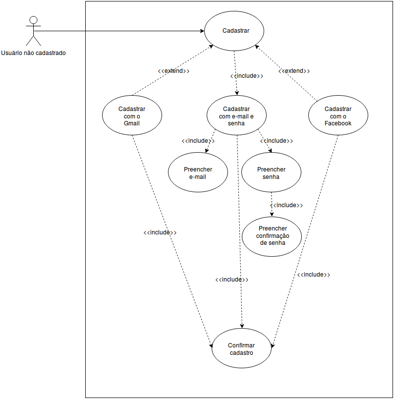
DCU 3
Visualizar pin
especificação de caso de uso: ECU 2

DCU 4
Comentar em um Pin
especificação de caso de uso: ECU 3

DCU 5
Compartilhar Pasta
especificação de caso de uso: ECU 25

DCU 6
Criar Pasta
especificação de caso de uso: ECU 26

DCU 7
Definir interesses
especificação de caso de uso: ECU 4
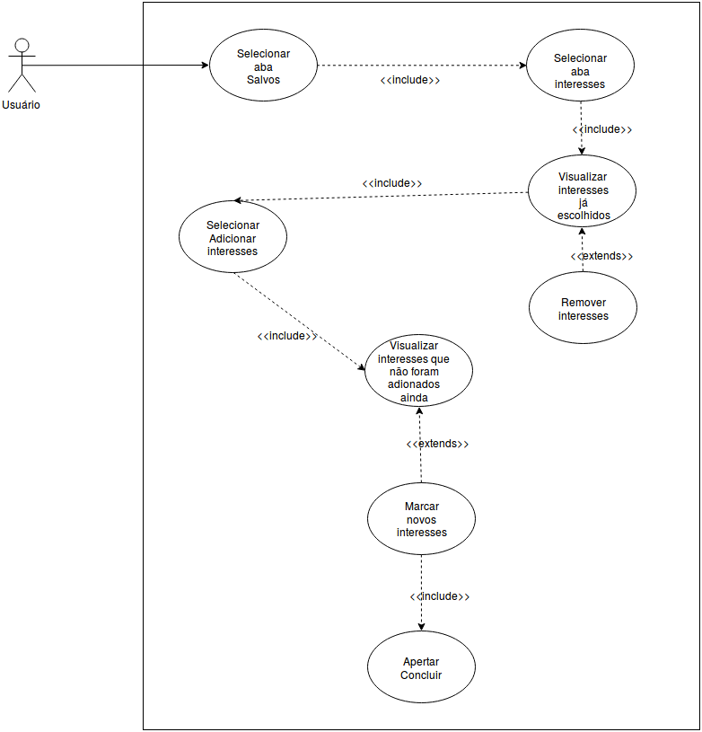
DCU 8
Editar um Pin
especificação de caso de uso: ECU 5

DCU 9
Enviar um Pin
especificação de caso de uso: ECU 13
Versão 1.0

Versão 2.0

DCU 10
Realizar Primeiro login
especificação de caso de uso: ECU 14
Versão 1.0
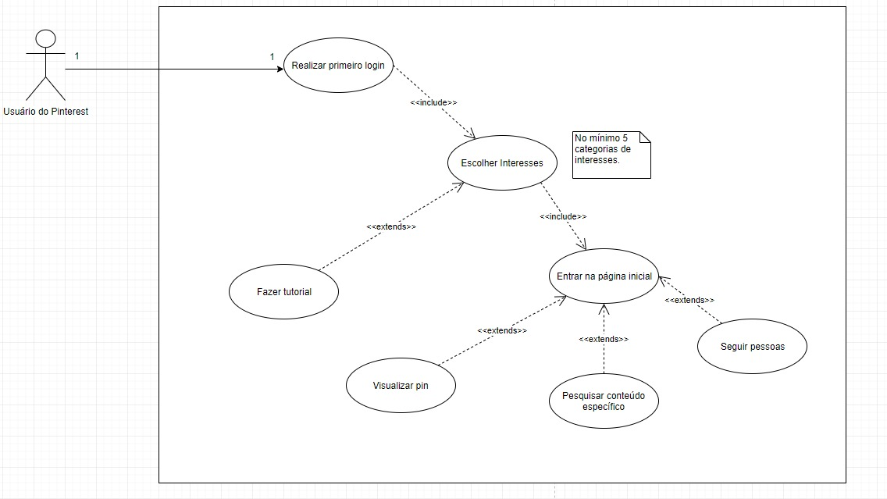
Versão 2.0

DCU 11
Fazer login
especificação de caso de uso: ECU 6
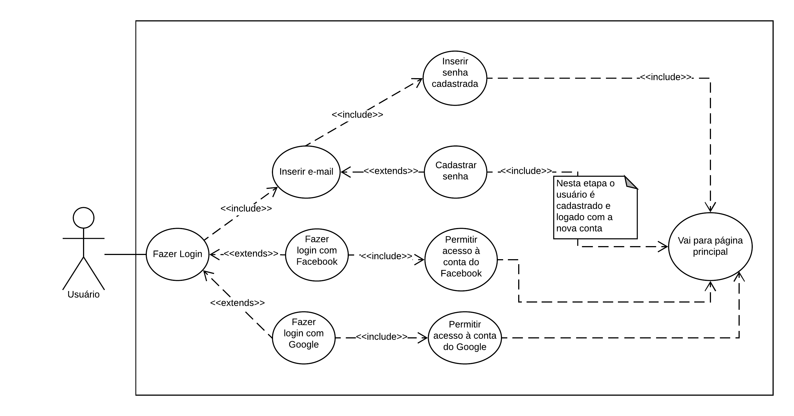
DCU 12
Ir para a fonte de um Pin
especificação de caso de uso: ECU 7
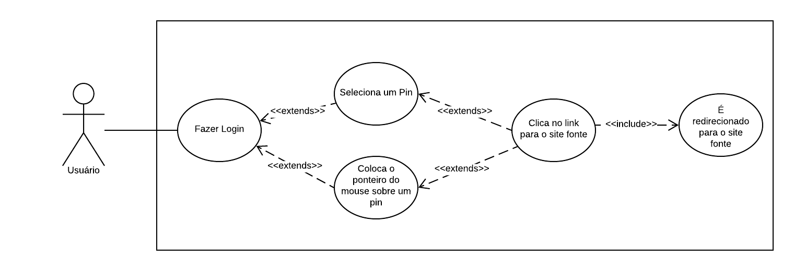
DCU 13
Organizar Pasta
especificação de caso de uso: ECU 22
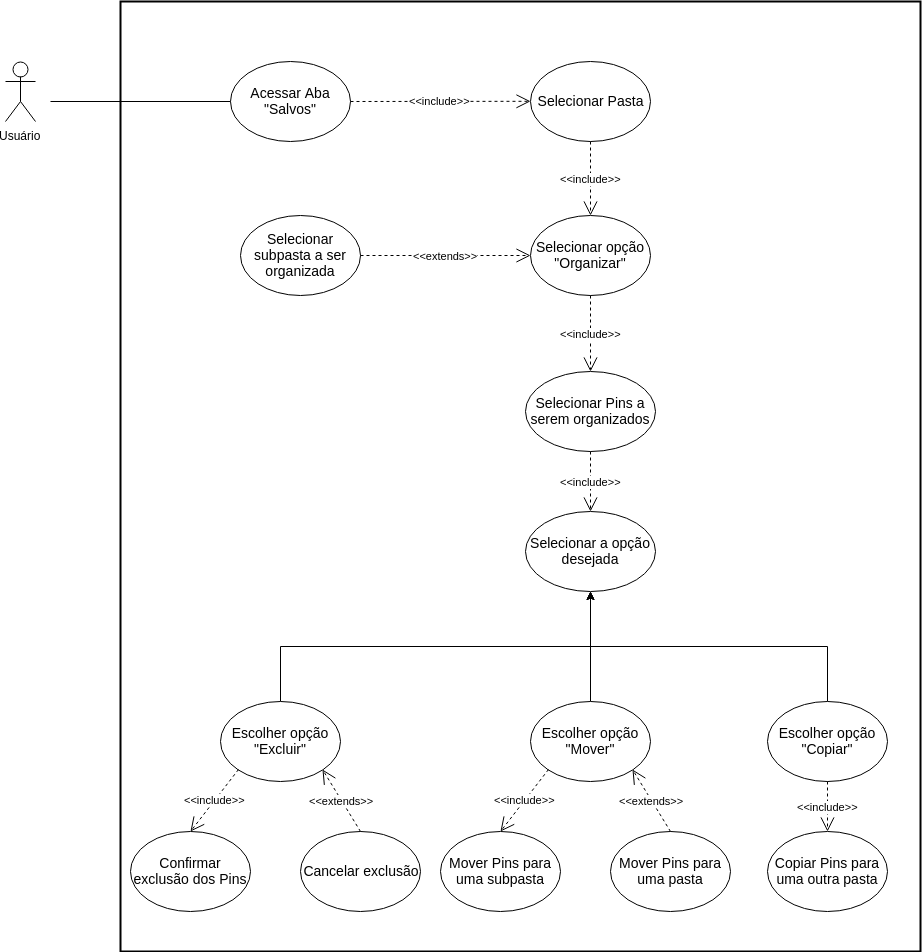
DCU 14
Pesquisar por tema
especificação de caso de uso: ECU 23

DCU 15
Pesquisar por foto
especificação de caso de uso: ECU 24

DCU 16
Seguir outro usuário
especificação de caso de uso: ECU 8
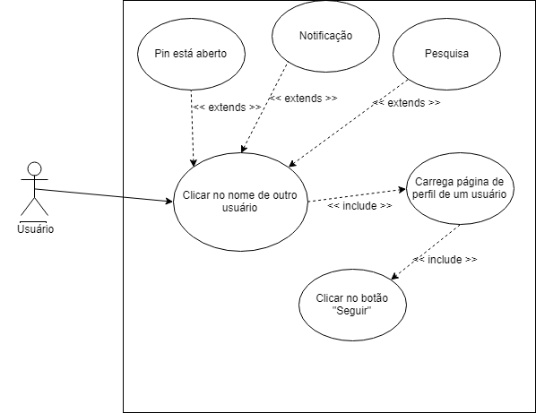
DCU 17
Salvar um Pin
especificação de caso de uso: ECU 12
Versão 1.0
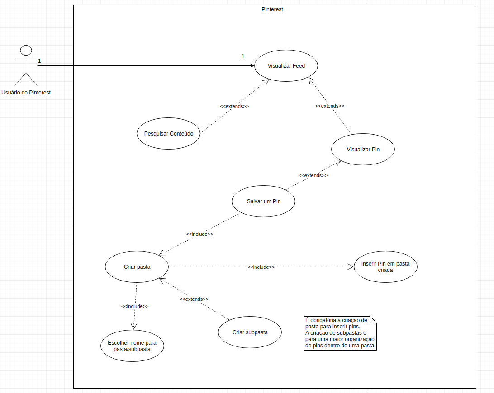
Versão 2.0

DCU 18
Visualizar Feed
especificação de caso de uso: ECU 19
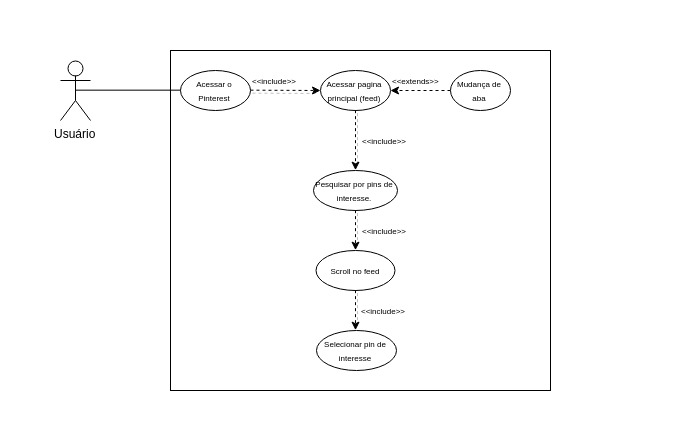
DCU 19
Visualizar aba Seguindo
especificação de caso de uso: ECU 9
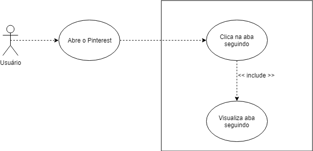
DCU 20
Receber notificações
especificação de caso de uso: ECU 20
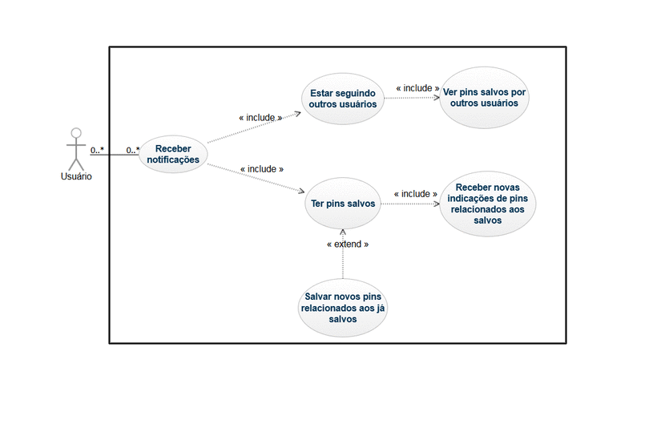
DCU 21
Classificar Pastas
especificação de caso de uso: ECU 21
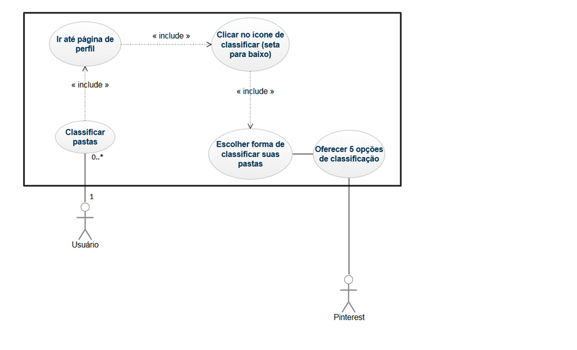
DCU 22
Ocultar um Pin
especificação de caso de uso: ECU 11

DCU 23
Denunciar um Pin
especificação de caso de uso: ECU 16

DCU 24
Classificar um Pin como Experimentado
especificação de caso de uso: ECU 17
DCU 25
Sair do aplicativo Pinterest
especificação de caso de uso: ECU 15
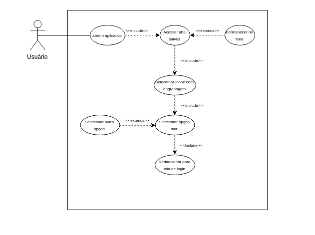
DCU 26
Editar Perfil
especificação de caso de uso: ECU 18
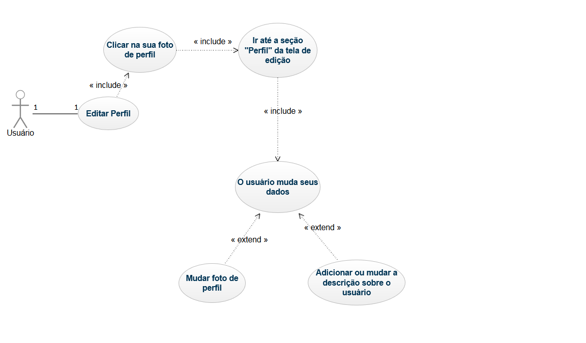